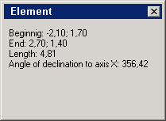
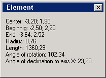

You can also view info about the graphic object either you draw at the moment, or the one you have selected : its size and coordinates. Click Info about object  available on the toolbar to open the stats window.
available on the toolbar to open the stats window.
The stats available for a line segment:

The stats available for an arc:
